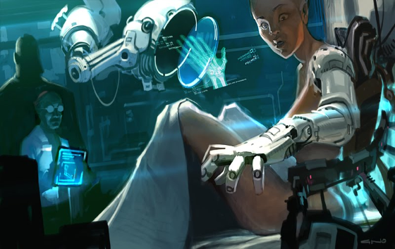
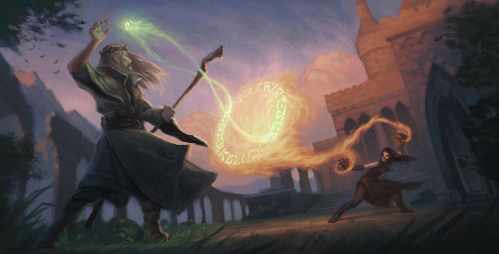

As opposed to the Player's Magic page, this page focuses on the narrative justifications of magic and the customs around it. For rules regarding magic and the tables related to magic, see the Player's page.
'Magic', as it is commonly accepted, is merely the application of unique materials to unusual power sources. Each 'color' of magic actually refers to a power source, each of which taps into completely unique physical laws, dimensions, and truths.
Surgery. Spellcasting doesn't just require extensive training (though it does require extensive training). It also requires surgery. The ability to manipulate the rare elements that enable magic is not innate. It requires a reasonable amount of cybernetic enhancement, as well as implanted stores of these elements. These surgeries are extensive, taking up to a year of repeated surgeries and physical therapy. If you do not have a rank of a magic skill at character creation, it requires a year of downtime to get it.
Blue Magic. Blue Mages don’t tap into other dimensions. They just master this one. They use arcanium to pull on the warp and weft of gravity, time, mass, and the underlying four elements of the universe, creating strong but usually short-lived magical effects. They tend to be weaker in rituals, and stronger in brutal simplicity.
Purple Magic. Purple Mages reach into the underlying Fey Realm, a parallel dimension linked to ours via unobservable quantum states. They let that Realm leak into our own. They don’t try to control it – attempting to control anything from the Fey Realm is a dangerous trick – but rather, control the points at which the energies of that dimension leak into our own. This Fey Realm is filled with elemental emotion, psychic residue, and abstract potential energies that many would refer to as ‘luck’. Tiny dimensional perforations are created with a Purple Mage’s store of etherium.
Red Magic. Red Mages manipulate the underlying structure of that around them. Not just DNA, but cellular cohesion, atomic cohesion, and even quantum cohesion. They use hemonite to allow themselves to create and mentally comprehend the billions of nanobots and quantum assemblers necessary to rework the structure of the people and things around them.
While the science behind wizarding ability is somewhat uniform, the training is not. There are as many schools of thought on training as there are colors of magic. In addition to having some effect on what talents are available to a character, the school of training also has narrative implications in terms of what kinds of rituals the spellcaster has access to, and what kinds of organizations will welcome them.
The teachings of Purple Mages align themselves around the Courts of the Fey, the families of gods that rule over the Fey Realm. One cannot dive too deep into the teachings of one school without establishing an affiliation with the Court of that school, and all of the political gymnastics that entails.
The School of Summer favors the direct, destructive power of chaos (over the more traditional subtlety of Purple Magic). Its practitioners are often battlemages and combat capable casters.
The School of Winter focuses on the power of ice and stalling. Winter wizards not only freeze their opponents, but often use deception to slow a target down until their ultimate goals are won.
Osmium and Osmium Universe are trademarked (TM) by Parker Harris Emerson. The Osmium Universe is Copyright 2018 Parker Harris Emerson. Genesys and the Narrative Dice System Copyright 2017-2018 Fantasy Flight Games.